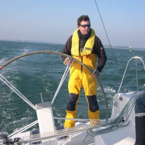

Stéphane MENUET
Qu'importe le support pourvu qu'on ait l'ivresse de la voile !
Du cata à foil au TP52, en passant par le Wally 110 pieds rien de ce qui navigue vite à la voile n'a de secret pour lui !
Directeur de l'école de voile de Saint‑Philibert, Stéphane est notre expert pour la préparation des
équipages et la validation des niveaux des skippers.